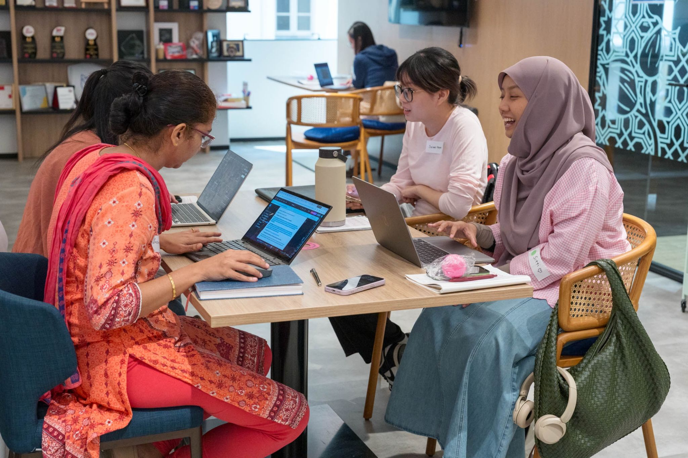
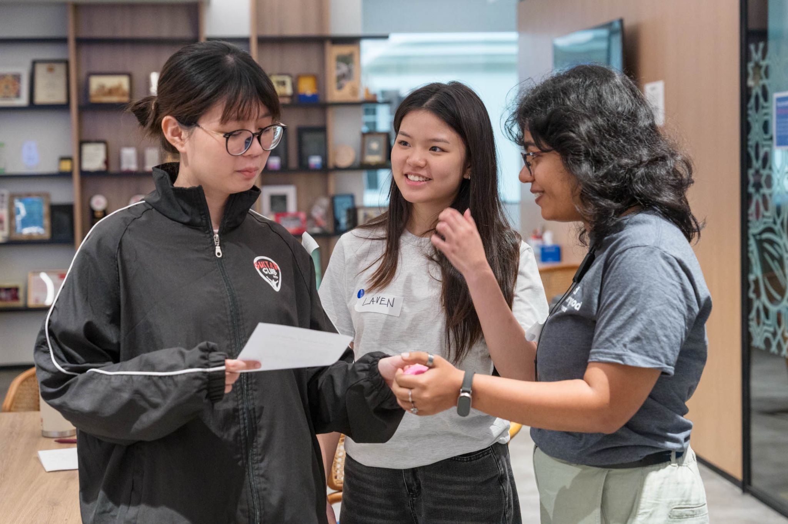
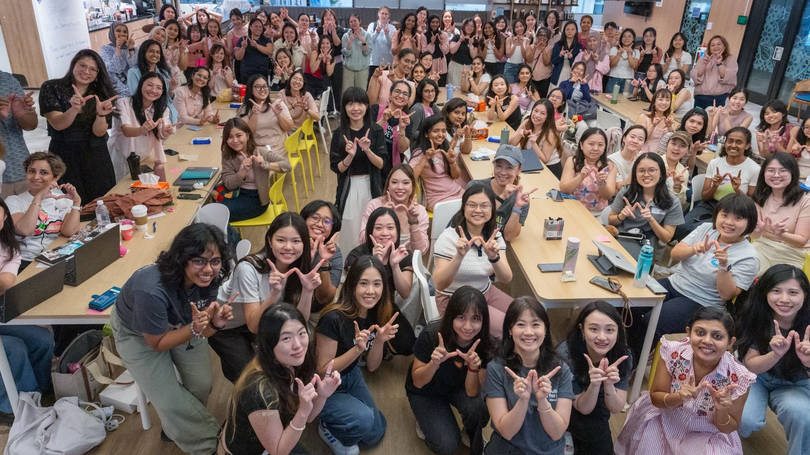
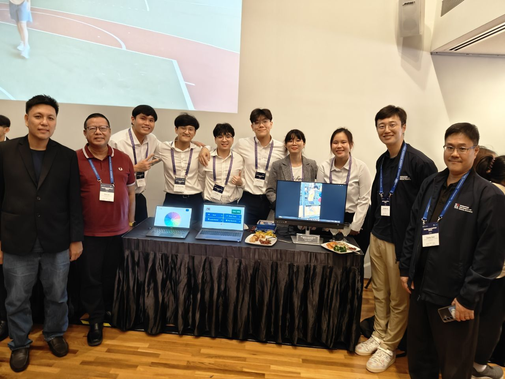
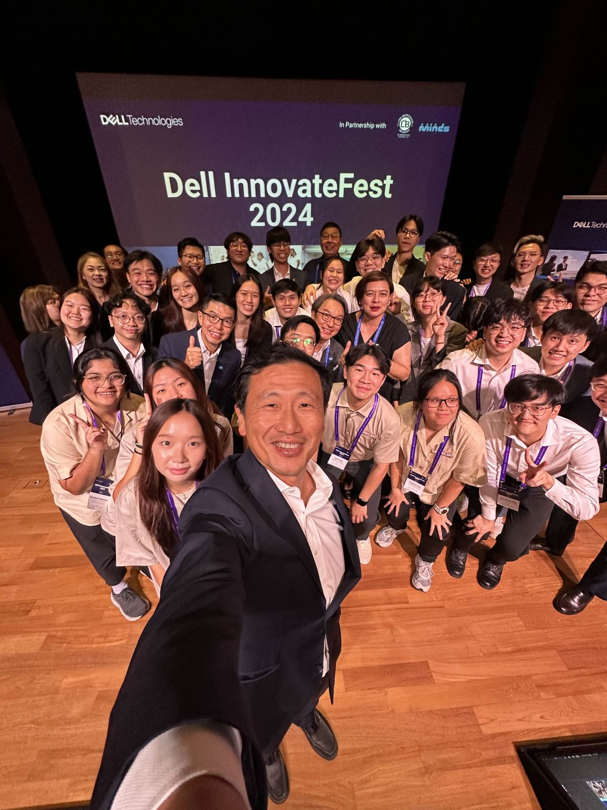
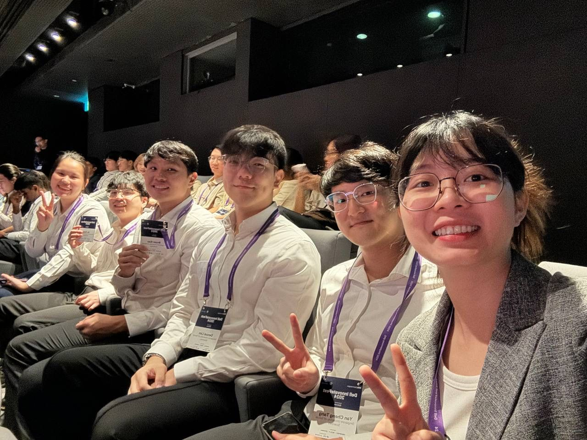

Social impact · Software · Community
Technology with empathy built in.
From emotional support during cancer treatment to helping seniors stay active and connected, these hackathons reminded me that thoughtful technology starts with listening to people.
Explore the projects01 · Her Code, Her Cause
A little more support through a difficult journey.
I had an incredible time at the Her Code, Her Cause hackathon, organised by Women Devs SG with Open Government Products. We worked on real-world problem statements with SAFV Singapore and the Breast Cancer Foundation.
Together with Sitti Hatta, Michelle Louisa Tanuwijaya, and Sushma Hiremagalur Keshavan, we developed an app to help breast cancer patients manage the emotional side of their treatment journey.
Beyond physical challenges, patients can face uncertainty, anxiety, and emotional stress. We wanted to create a supportive digital companion with emotional check-ins, encouragement, and helpful resources—so patients could feel less alone.
What began as a team of strangers quickly became a group united by a shared goal. I’m grateful for the collaboration, the learning, and the chance to build something meaningful together.



02 · Dell InnovateFest 2024
Helping seniors find connection through movement.
For two months, I had the privilege of working with Tang Yan Cheng, Su Yang, Denzel Lim, Eve Tey, and Bryan Koo, with mentorship from Eugene Swee and Phil Loh.
For Dell Technologies InnovateFest, we took on social isolation among seniors. We developed IM-FIT, a web application that encourages physical and social activities to help bridge social gaps and support both physical and mental well-being.
We were grateful to collaborate with Lions Befrienders and learn from the community we hoped to serve. Thank you to our professors, Casey How and Grandee Lee, for their support, and to Minister Ong Ye Kung for attending and encouraging the teams.
Both experiences reinforced the same lesson for me: useful technology begins with understanding the people and the challenges behind a problem.



Build with empathy. Make room for connection.